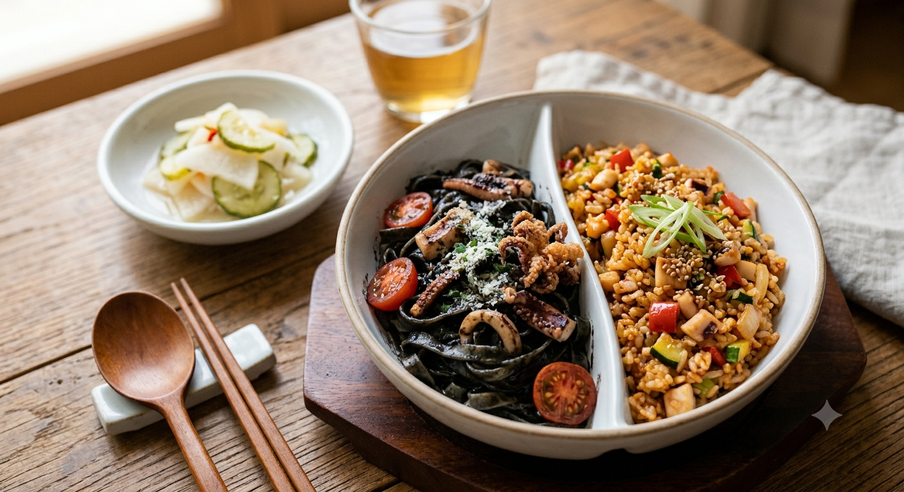

10월 25일은 대한민국의 소중한 영토 주권을 기념하는 '독도의 날'입니다. 1900년 10월 25일, 고종 황제가 대한제국 칙령 제41호를 통해 독도를 울릉도의 부속 섬으로 명시한 역사적인 날을 기념하여 제정되었습니다.
1. 오늘의 음식 추천
-
아침: 새우를 넣은 맑은 아욱국과 쌀밥
-
점심: 오징어 먹물 파스타 또는 오징어 볶음밥

-
저녁: 회무침, 생선구이와 따뜻한 홍합밥
2. 한국
- 대한제국 칙령 제41호 반포 (1900년 과거): 고종 황제가 독도를 울릉군의 관할 구역으로 명시하여 대내외에 독도가 우리 영토임을 확고히 한 날입니다. 현대 법적 주권의 핵심 뿌리가 되는 날입니다.
- 명량 대첩 승리 (1597년 과거): 이순신 장군이 단 12척의 배로 133척의 왜선에 맞서 기적 같은 승리를 거둔 명량해전이 발발한 날입니다 (음력 9월 16일을 양력으로 환산 시 10월 25일).
- 누리호·독도 관련 미래 연구 성과 (미래 선언): 매년 10월 25일 독도의 날을 기점으로 해양 영토 주권을 공고히 하기 위한 동해 해양 생태계 조사 및 차세대 해양 관측 위성 데이터 고도화 프로젝트가 매년 이 시기에 갱신 및 발표되고 있습니다.
- 중국인민지원군 한국전쟁 참전 (1950년 과거): 6·25 전쟁 당시 국군과 유엔군이 압록강까지 진격했으나, 이날 중국군이 대규모로 참전하면서 전쟁이 장기화되고 1·4 후퇴의 계기가 된 가슴 아픈 날입니다.
- 독립운동가 홍범도 장군 서거 (1943년 과거): 봉오동 전투의 영웅인 홍범도 장군이 고국 땅을 밟지 못하고 카자흐스탄 크질오르다에서 쓸쓸히 서거하신 날입니다.
3. 세계
- 대만 광복절 (1945년 과거): 제2차 세계대전에서 일본 제국주의가 패망함에 따라, 대만이 50년간의 일본 식민 통치에서 벗어나 공식적으로 반환된 날입니다.
- 영국 아쟁쿠르 전투 승리 (1415년 과거): 백년전쟁 중 잉글랜드의 헨리 5세가 수적으로 훨씬 우세했던 프랑스군을 격파하며 군사 역사상 가장 유명한 전술적 승리를 거둔 날입니다.
- 글로벌 우주·기후 테크 서밋 (미래 일정): UN 및 국제 사회는 매년 10월 말(25일 전후)을 기점으로 기후변화 대응을 위한 당사국총회(COP) 사전 조율 및 우주 쓰레기 감축을 위한 국제 민간 우주 기구들의 연례 미래 전략 회의를 개최하고 있습니다.
- 러시아 볼셰비키 10월 혁명 발발 (1917년 과거): 레닌의 지도로 정권을 장악한 볼셰비키 혁명이 일어나 결과적으로 인류 역사상 거대한 공산주의 진영이 탄생하고, 장기간의 냉전과 수많은 내부 숙청의 서막을 열었던 날입니다 (당시 러시아 율리우스력 기준 10월 25일).
- 중화민국(대만) UN 상임이사국 지위 상실 (1971년 과거): 유엔 총회 결의 제2758호에 의해 대만이 UN에서 축출되고 그 자리를 중화인민공화국(중국)이 대체하면서, 현대 양안 관계의 외교적 고립과 갈등이 심화된 날입니다.